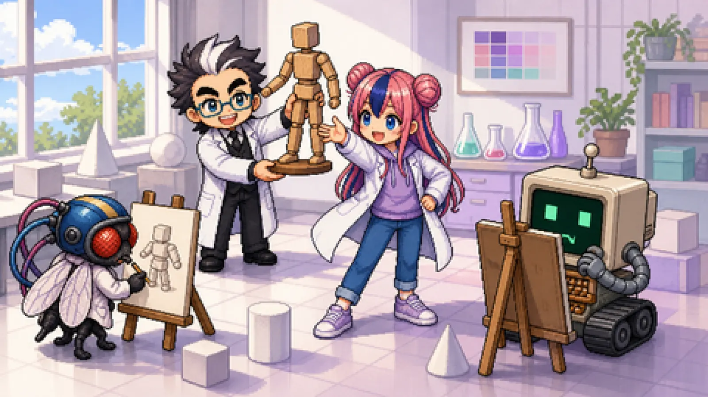
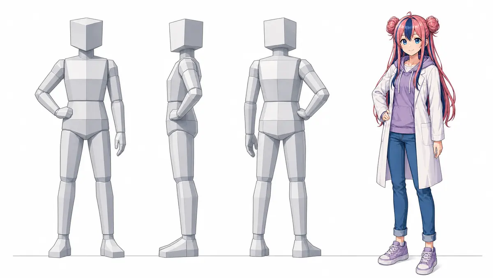
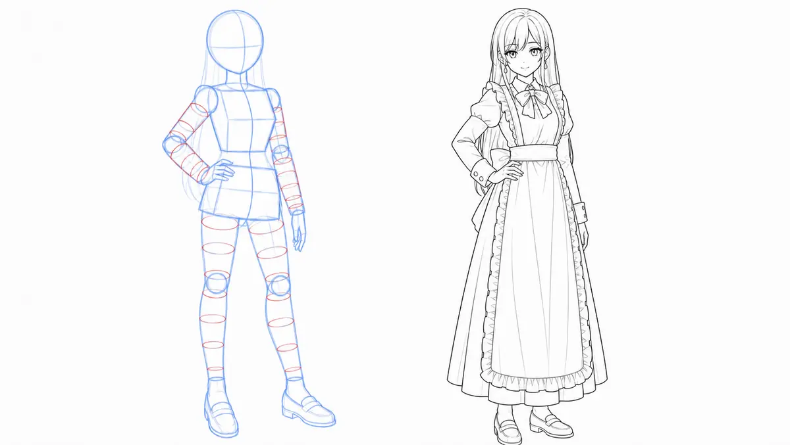
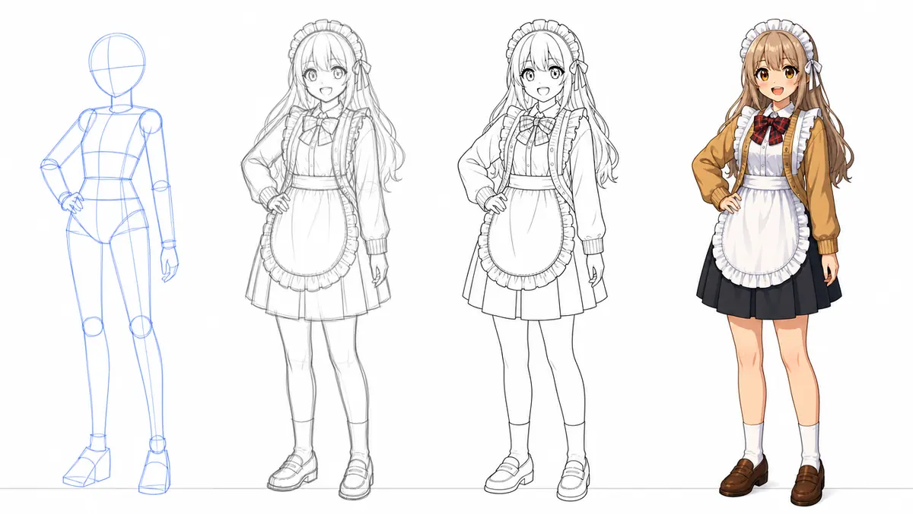
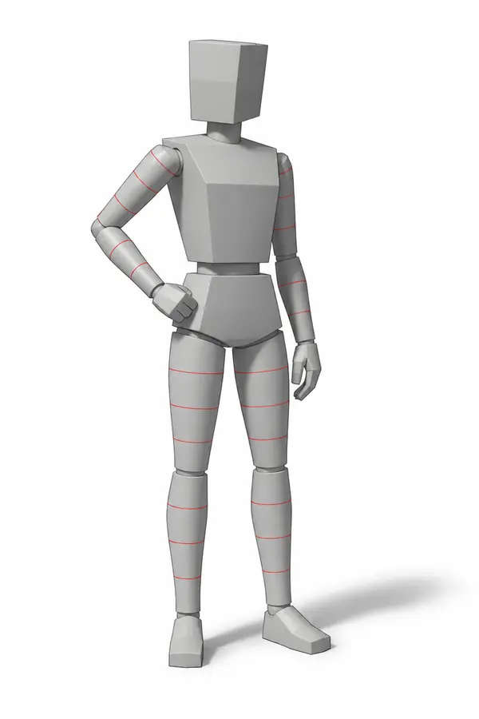
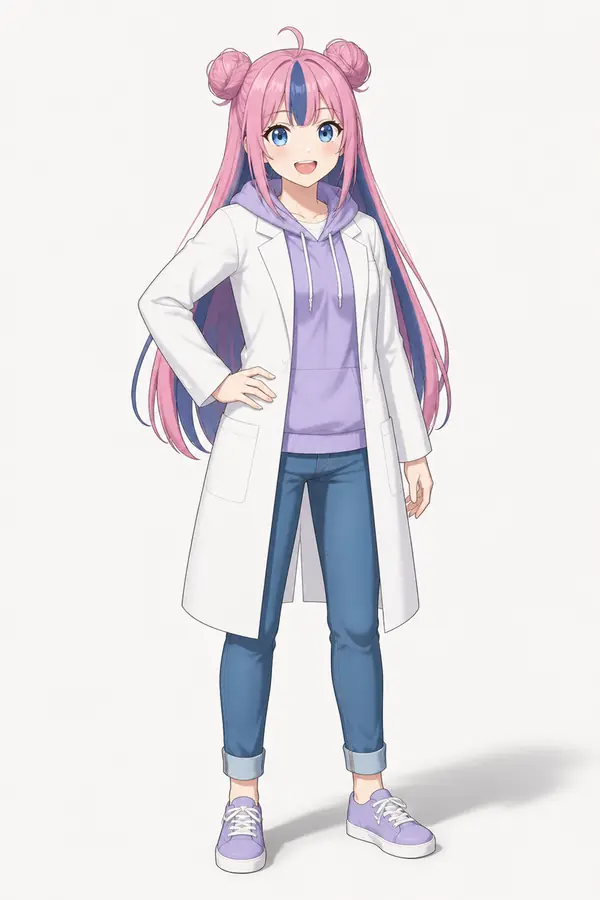

오늘의 과제

박사첫 과제다. 하루를 그려 보자. 단, 그리기 전에 하나만 묻겠다. 사람 몸은 어떤 모양이지?

주판봇사람 모양이죠! 머리카락 한 올부터 정성껏 그리면 됩니다!

초파리 연구원머리카락이 어디 붙는지는 머리 모양을 알아야 정해지는데?

조수 하루저… 모델 서는 건 처음인데, 자세는 이대로 괜찮아요?

첫 모델은 조수 하루입니다. 주판봇은 머리카락부터 그리기 시작하고, 초파리는 상자 하나부터 놓습니다. 누구 그림이 덜 흔들릴까요?
그림 실력·코드·수식을 몰라도 됩니다. 실험을 눌러 보며 따라오세요.
복잡한 몸을 단순한 도형 몇 개로 바꾸면 '면이 어디를 향하나'가 보입니다
옷 가게 마네킹, 데생 수업의 나무 인형이 모두 이 단순화입니다. 뼈대가 바로 서야 옷이 바로 걸립니다.
애니메이션 원화가는 캐릭터 설정표를 그릴 때 상자·원기둥 밑그림을 먼저 그립니다. 3D 모델러는 같은 생각으로 '로폴리곤'(면이 적은 거친 모형)부터 만듭니다.


머리 1, 목 1, 가슴 1, 골반 1, 위팔·아래팔 4, 허벅지·종아리 4로 12개의 도형이 됩니다.
도형마다 '앞면·옆면·윗면'이 생기므로, 빛이 어디서 오면 어느 면이 어두울지 정할 수 있습니다.
작업에서는 이 밑그림을 레이어 하나로 남겨 두고, 그 위에서 옷과 얼굴을 그립니다.

AI에게 '하루 전신'을 그려 달라고 했더니 팔이 머리 길이의 4배로 나왔습니다. 그대로 써도 될까요?
상자 밑그림으로 비례를 재 보면 위팔+아래팔은 머리 길이의 약 2.5~3배가 보통입니다. AI 그림도 도형으로 겹쳐 재 보는 습관이 확인 방법입니다.
팔·다리·몸통에 고리선을 감으면 둥근 정도와 보는 각도가 보입니다

학교 수학으로 보면 — 삼각비(sin) — 기울어진 원을 비스듬히 보면 타원이 되고, 세로 비율이 sin입니다.
| 식 조각 | 뜻 |
|---|---|
| 가로 폭 | 원기둥의 지름(화면에서 본 폭) |
| 내려다보는 각 | 눈높이에서 원기둥 끝을 내려다보는 각도, 0°~90° |
| sin | 각도를 0~1 사이 비율로 바꾸는 계산 |

머그컵 입구를 정면에서 보면 선, 비스듬히 보면 타원, 위에서 보면 동그라미입니다.
옷깃·소맷부리·허리띠는 모두 원기둥에 감긴 고리입니다. 고리를 같은 각도로 맞추지 않으면 소매 끝이 몸에서 떠 보입니다.
30°에서 고리 세로 폭은 가로 폭의 0.5배, 60°에서는 약 0.87배입니다.
같은 원기둥 위의 고리는 모두 같은 각도에서 보므로 납작함이 같아야 합니다. 위아래로 갈수록 눈에서 멀어지면 조금씩 둥글어집니다.
작업에서는 소맷부리 고리를 먼저 맞춘 뒤 주름을 그 고리 방향으로 감아 그립니다.

AI 그림에서 왼쪽 소맷부리는 동그랗고 오른쪽은 일자입니다. 같은 높이의 두 팔인데 괜찮을까요?
같은 높이·같은 각도라면 고리의 납작함이 같아야 합니다. 다르면 한쪽이 몸에서 떠 보이는 오류입니다.
3D 마네킹을 돌려, 보이지 않는 쪽도 이어져 있다는 것을 확인합니다
옷 가게 회전 진열대에서 마네킹을 돌리면 옷이 몸을 감싼 모양이 보입니다.
게임·애니 제작에서는 '턴어라운드'(앞·옆·뒤 설정표)를 만들고, 3D 팀은 이 표로 모형을 만듭니다. 렌더링 3부작의 '메시'가 바로 이 모형입니다.
이 마네킹의 가슴 상자는 폭 32, 두께 20(예시 단위)입니다. 앞에서는 32, 옆에서는 20으로 보입니다.
돌릴 때 빛을 받는 면이 바뀌어 밝기가 달라집니다. 2부에서 다룰 '면 방향과 밝기'가 여기서 시작됩니다.
작업에서는 앞모습을 그린 뒤 반드시 옆모습 두께를 표로 적어 두고 맞춥니다.
AI가 만든 앞·옆·뒤 시트에서 옆모습 어깨가 앞모습보다 넓습니다. 문제일까요?
옆에서 보이는 것은 어깨 '두께'입니다. 두께가 폭보다 넓다면 모형이 서로 맞지 않는 시트입니다.
원기둥 위 같은 간격의 줄은 가장자리로 갈수록 좁게 보입니다
학교 수학으로 보면 — 단위원과 삼각비(sin) — 원 위의 점을 가로축에 내린 그림자 길이입니다.
| 식 조각 | 뜻 |
|---|---|
| 반지름 | 원기둥 반지름 |
| 시작각·끝각 | 정면을 0°로 잰 그 줄의 양 끝 각도 |
| sin 끝각 − sin 시작각 | 그 줄이 화면 가로축에서 차지하는 길이 |
체크무늬 셔츠를 입은 사람을 보면 몸통 가장자리의 체크가 빽빽하게 접혀 보입니다.
니트 골, 줄무늬 스커트, 갑옷 판을 그릴 때 이 간격 규칙을 지키면 별다른 명암 없이도 둥글게 보입니다.
6줄이면 폭은 가운데부터 0.5, 0.366, 0.134 순서로 줄어듭니다(반지름 1, 반쪽 기준).
줄 수를 늘려도 '가운데 넓고 가장자리 좁다'는 규칙은 같습니다.
작업에서는 니트 골·줄무늬를 그릴 때 가장자리 줄을 가운데의 4분의 1 정도로 좁혀 둥근 느낌을 냅니다.
AI 그림의 줄무늬 소매가 가장자리까지 같은 간격입니다. 고칠 곳일까요?
가까이 다가오는 팔이 아니라면, 원기둥 가장자리 줄은 좁아져야 합니다. 같은 간격이면 납작한 천처럼 보이는 신호입니다.
도형 → 거친 스케치 → 깔끔한 선 → 색, 단계마다 이전 단계를 지우지 않고 얹습니다
요리도 손질 → 굽기 → 양념 → 담기 순서가 있습니다. 순서를 지키면 어디서 틀렸는지 압니다.
디지털 도구에서는 단계마다 레이어를 따로 둡니다. AI 그림 실습(5부)의 '포즈 가이드 → 선화 가이드 → 완성'도 같은 순서입니다.

네 레이어를 켜고 끄면, 완성 그림 속에도 도형이 숨어 있다는 것이 보입니다.
어느 단계에서 틀렸는지 찾으면 그 단계와 그 위만 고칩니다.
작업에서는 도형 레이어를 지우지 않고 숨겨 두는 습관이 수정 시간을 크게 줄입니다.

AI가 한 번에 완성 그림을 줬는데 손가락이 이상합니다. 어느 단계부터 고쳐야 할까요?
AI 그림에는 단계 레이어가 없습니다. 그래서 포즈·선화 가이드(5부)를 먼저 주고 생성하면, 틀린 단계만 바꿔 다시 만들 수 있습니다.
AI에게도 한 번에 완성을 시키지 않습니다. ① 상자·원기둥 마네킹으로 자세와 비례를 먼저 만들고, ② 그 그림을 참고 그림으로 붙여 하루를 그리게 합니다. 1부의 '도형 → 선화 → 색' 순서를 프롬프트 두 번으로 나눈 것입니다.
얼굴·옷 없이 도형만 시킵니다. 고리선을 넣어 달라고 하면 팔다리가 둥근 통이라는 것이 보입니다. 첨부: 없음

Full body figure drawing reference, vertical 2:3. A simple low-poly 3D mannequin made only of boxes and cylinders: box head, tilted box chest and box pelvis, cylinder upper arms, forearms, thighs and shins, simple box feet. Light gray clay material with clearly visible flat planes. Pose: standing upright in a three-quarter view turned slightly to the right, left arm relaxed at the side, right hand resting on the hip; body about 8 heads tall. Thin red contour rings wrapped around each arm and leg cylinder to show the roundness. Lighting: soft light from the upper left, the right-facing planes darker, a soft cast shadow on the floor toward the lower right. Plain white background. No face details, no clothes, no text, no letters, no logos.
①의 그림을 '자세·비례 가이드'로 붙이고, 캐릭터 고정 문장을 더합니다. 첨부: ①의 결과 + 하루 설정 시트

Full body character illustration, vertical 2:3. Use the attached mannequin image as the pose and proportion guide: keep exactly the same pose, body proportions and camera angle. Character (match the attached reference sheet exactly): Haru, a cheerful lab assistant, a young adult woman in her early twenties, long straight pink hair reaching the waist with navy blue streaks, including a thick navy streak down the center of the bangs, two round slightly messy hair buns on top of the head, a small ahoge, big bright blue eyes, lavender hoodie with white drawstrings over a white t-shirt, open white knee-length lab coat, rolled-up blue jeans, lavender sneakers. High-quality anime illustration, clean lineart, two-tone cel shading with soft highlights. Lighting: soft daylight from the upper left, form shadows on the right side of the body, soft cast shadow on the floor toward the lower right. Plain off-white background. No text, no letters, no logos, no watermark, no revealing clothing, not resembling any famous anime character, five fingers on each hand.

| 항목 | 주판봇 | 초파리 |
|---|---|---|
| 닮음(외형 고정값) | 8 | 7 |
| 입체감(면의 방향) | 4 | 8 |
| 자연스러움(비례) | 5 | 8 |
| 합계 | 17 | 23 |


점수는 이야기 속 예시입니다. 실제 그림을 평가한 값이 아닙니다.
| 주제 | 한 줄 | 작업에서는 |
|---|---|---|
| 단순화 | 몸 = 상자와 원기둥 | 면의 방향이 보인다 |
| 고리선 | 세로 폭 = 가로 폭 × sin(각) | 소맷부리·옷깃 맞추기 |
| 돌려 보기 | 폭과 두께는 따로 | 앞·옆·뒤 시트 맞추기 |
| 원근 간격 | 가장자리는 약 4분의 1 | 줄무늬·니트 골 |
| 레이어 | 도형→스케치→선화→색 | 틀린 단계만 고치기 |

이 페이지에 나온 개념·방법·비유·쓰임을 모았습니다. 검색하고, "설명 보러 가기"로 본문에 돌아갑니다.
지식 색인을 출처와 함께 파일로 내려받습니다. 서지 관리는 BibTeX·RIS, 온톨로지 편집은 Turtle, 그래프 도구는 CSV, 여러 페이지 합치기는 kg.json입니다.